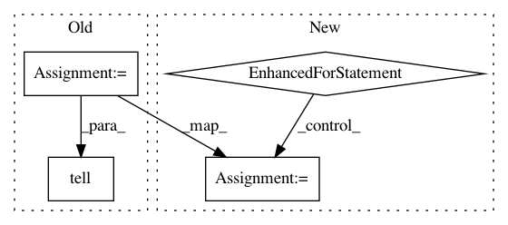

37cc84d6429997ee67f6db9e7b267d27fe2fdf7c,skopt/tests/test_space.py,,test_purely_categorical_space,#,761
Before Change
dims = [Categorical(["a", "b", "c"]), Categorical(["A", "B", "C"])]
optimizer = Optimizer(dims, n_initial_points=1, random_state=3)
x = optimizer.ask()
// before the fix this call raised an exception
optimizer.tell(x, 1.)
@pytest.mark.fast_test
def test_partly_categorical_space():
After Change
dims = [Categorical(["a", "b", "c"]), Categorical(["A", "B", "C"])]
optimizer = Optimizer(dims, n_initial_points=2, random_state=3)
for _ in range(2):
x = optimizer.ask()
// before the fix this call raised an exception
optimizer.tell(x, np.random.uniform())
@pytest.mark.fast_test
def test_partly_categorical_space():
dims = Space([Categorical(["a", "b", "c"]), Categorical(["A", "B", "C"])])
assert dims.is_partly_categorical
In pattern: SUPERPATTERN
Frequency: 3
Non-data size: 4
Instances
Project Name: scikit-optimize/scikit-optimize
Commit Name: 37cc84d6429997ee67f6db9e7b267d27fe2fdf7c
Time: 2020-09-01
Author: lucas@plagwitz.de
File Name: skopt/tests/test_space.py
Class Name:
Method Name: test_purely_categorical_space
Project Name: scikit-optimize/scikit-optimize
Commit Name: 9cdd21160f4b4352b05f7b7ce9f0f63506c585c9
Time: 2017-04-17
Author: iaroslav-ai@users.noreply.github.com
File Name: benchmarks/bench_ml.py
Class Name:
Method Name: evaluate_optimizer
Project Name: scikit-optimize/scikit-optimize
Commit Name: d1d7598ece5e8357ee515746b08437caaf8f77df
Time: 2017-01-10
Author: betatim@gmail.com
File Name: skopt/optimizer/base.py
Class Name:
Method Name: base_minimize